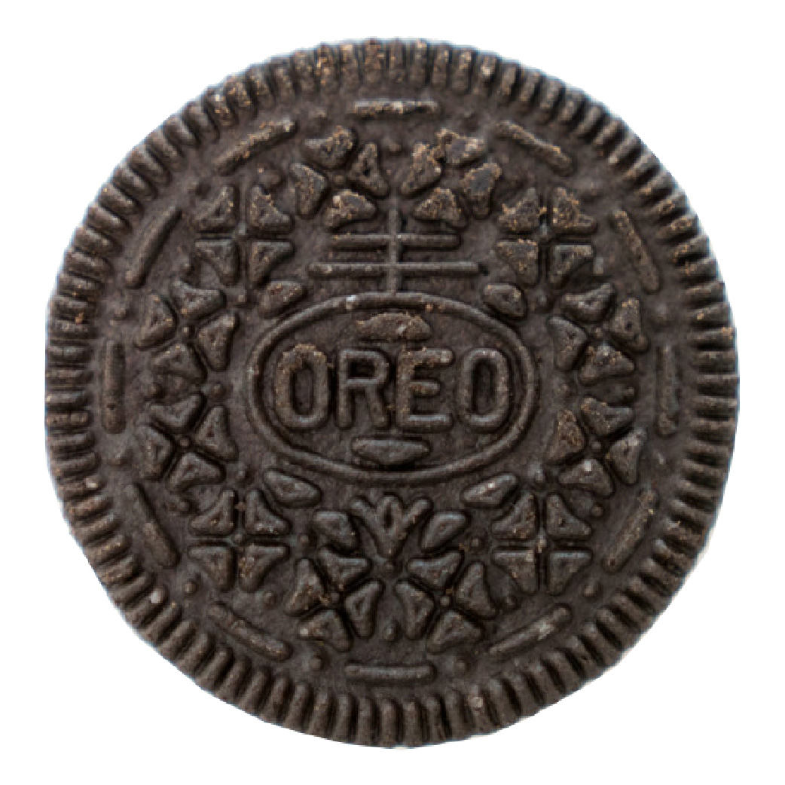

Oreos

Wherever your dreams take you, I will follow… For they are my dreams also.
We met at a diner on the route to Vegas. I got her a black coffee and slice of apple pie. We were both travelling alone, both runnin’ away from something or other. Her daddy liked to drink n’, as you can imagine, she often ended up on his bad side. She had dreams of open roads and neon signs and a new town every weekend where no one knew who she was. That’s the thing about this country: the roads never end and the signs always call to you. You could spend your whole damned life on a never-ending highway and find friendship at every truck stop. And that’s how we met. I was in some trouble with the law but I kept that fact to myself at the time. They say stuff like that catches up with you: they must’ve never met a guy like me!
If you ask me, I reckon I like being alone. Sure, some company would be nice but I never was the type to keep anyone close. When someone leaves they don’t just come right back. And so I keep on walking. I got lost a while back but I figure I lost so much it might as well be my turn to get lost. Don’t worry about me now, I’ll get to where I’m goin’ eventually. For now, I’ll keep on walking.